CSCI 5609 Visualization · Fall 2026 · SvelteKit + TypeScript + D3 · Dataset: summer_movies.csv (899 IMDb titles with “summer” in the title)
The A2 page contains the required dashboard (Part 1) and the self-designed multi-view visualization (Part 4). The repository keeps the A0 and A1 routes from earlier assignments.
All four template tasks are implemented:
d3.line() generator with curveBasis draws movies per year. Small dots show the raw yearly counts.d3.brushX on the line chart inverts the pixel selection with xScale.invert, snaps it to whole years and writes yearRange. The scatter plot shows only movies in that range. Clearing the brush restores all movies.<select bind:value> controls bind any attribute to the x, y and size channels. The points animate to their new positions.Small additions: titles with an unknown year or runtime (stored as null) are skipped only when that attribute is encoded. Large circles are drawn first so that small circles on top stay clickable. A “log X” checkbox (used in Factor 2) applies a log scale to a numeric x attribute.
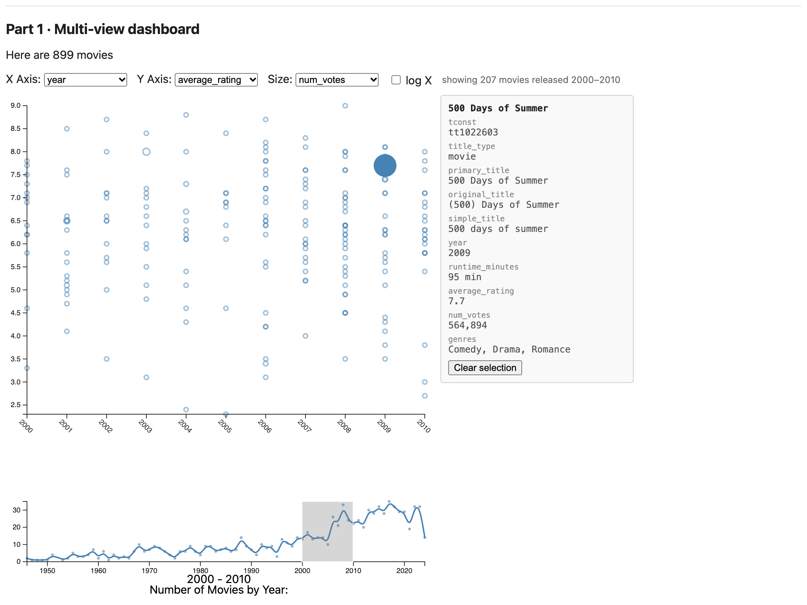
The scatter plot has heavy overplotting. Hundreds of movies share a release year, and ratings are rounded to one decimal, so many circles land on or near each other. At 0.5 opacity, overlapping outlines add up: a spot where ten movies overlap looks darker than a spot with one movie, so the chart shows density as well as position. Where outlines cross, each circle can still be traced instead of merging into one solid tangle. The lower default opacity also leaves room for the selection highlight: the clicked movie is filled and drawn at opacity 1, so it stands out.
At opacity 1 (Figure 2, right), every outline is drawn at full strength. A single movie and a stack of ten look the same, so the dense 2005–2024 band turns into a uniform mesh and you can no longer see where movies concentrate. A selected point also has much less contrast with the unselected ones.
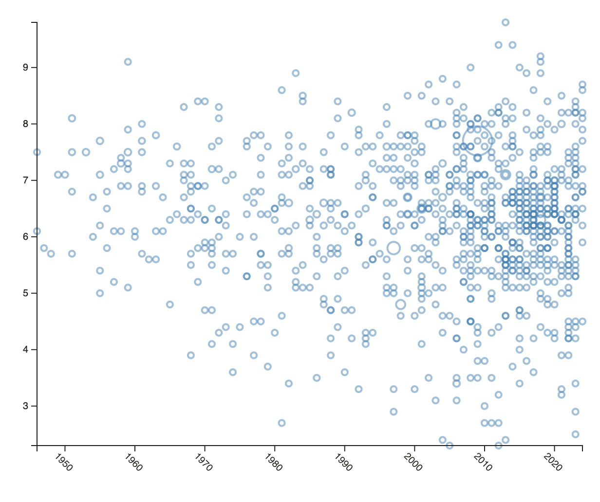
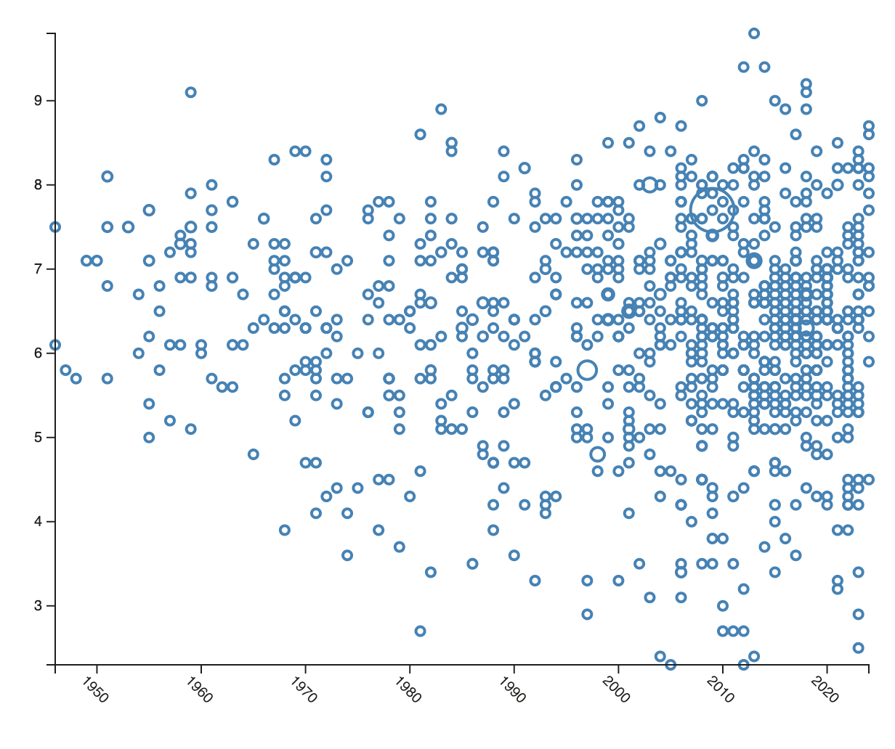
Position and size are magnitude channels. They work for quantitative or ordered data and make little sense for identifiers or nominal fields with hundreds of values. The dataset's attributes are: tconst (ID), title_type (nominal, 3 values), primary_title, original_title, simple_title (nominal, about 776–899 distinct strings), year (temporal), runtime_minutes, average_rating, num_votes (quantitative) and genres (multi-valued nominal, 24 values).
| Channel | Remove | Keep |
|---|---|---|
| X axis | tconst, primary_title, original_title, simple_title | year, runtime_minutes, average_rating, num_votes, title_type, genres (genres is fine on x as a few dozen categories) |
| Y axis | tconst, primary_title, original_title, simple_title (genres is already excluded) | average_rating, num_votes, runtime_minutes, year, title_type |
| Size | tconst, primary_title, original_title, simple_title, title_type, year | num_votes, average_rating, runtime_minutes |
The ID and three title fields have no order and almost one value per movie. On an axis they create ~800 unreadable bands (Figure 3). Because only 776 of 899 primary titles are unique, movies that share a title such as “Indian Summer” also collapse into one band. Size implies “more vs. less”, so it should only encode quantities. title_type is nominal, and with a band scale its size would depend on the alphabetical order of the categories. year is ordered, but area is a poor channel for a date, and “bigger = later” is not a meaningful reading. Year belongs on position.
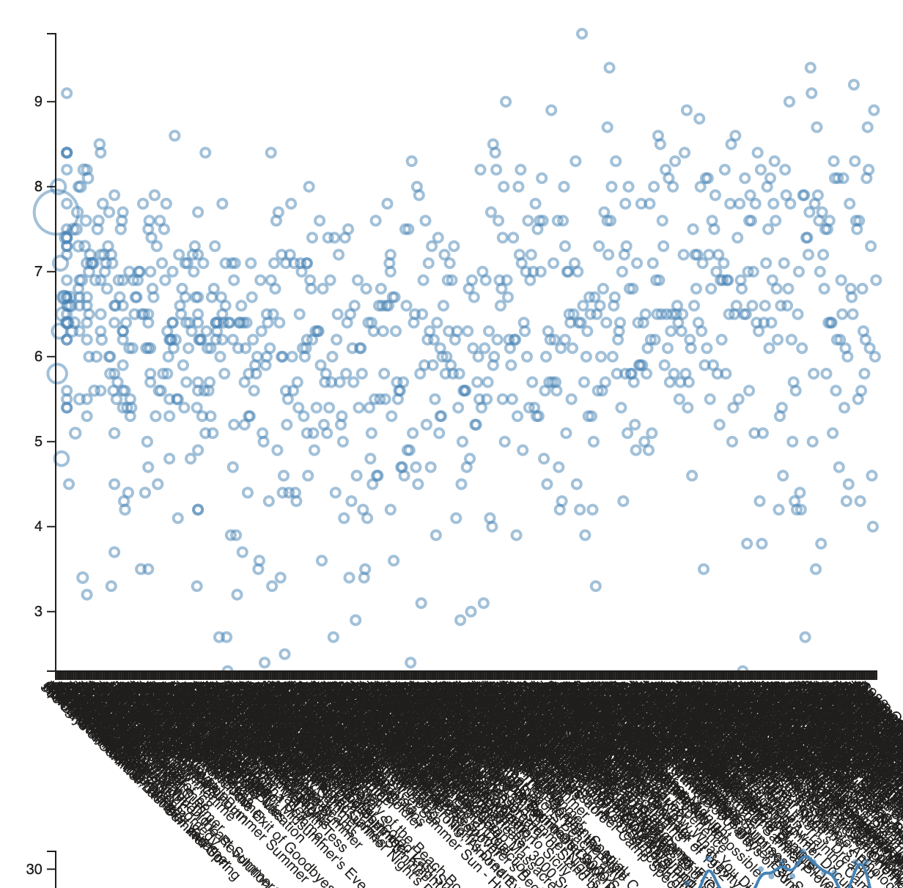
Before exploring, I proposed three factors from intuition:
Setup: X = genres, Y = average_rating, Size = num_votes. A movie with several genres appears in each of its genre columns.
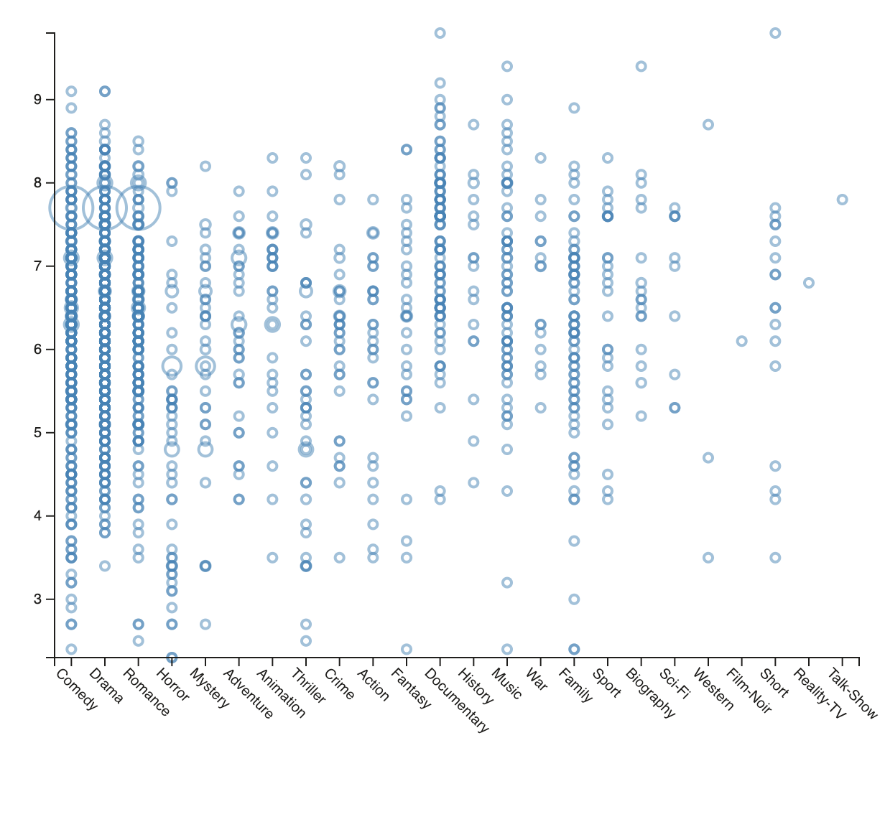
Genre columns sit at very different heights. Horror is the lowest: its circles crowd between 2.3 and 6. Mean rating is 4.81 (median 4.95), and half of the 48 horror titles are rated below 5. Thriller is also low (mean 5.32; 39% below 5). Documentary is the opposite: a tight column between 6 and 9.8 with mean 7.31 (median 7.5). 27% of documentaries are rated 8 or higher and only 2% are below 5. The big genres, Drama (6.29), Comedy (6.15) and Romance (6.15), sit in the middle with wide spread. Music, History, Biography and War also lean high (6.7–6.9).
Extra observation (X = title_type): TV movies average 6.63 and direct-to-video titles 6.38, compared with 6.20 for theatrical movies. This is partly because many documentaries are TV or video releases.
Setup: X = num_votes, Y = average_rating, Size = num_votes. On a linear axis, 500 Days of Summer (564,894 votes) squeezes everything else into one column (Figure 5a), so I switched on the log X option (Figure 5b).
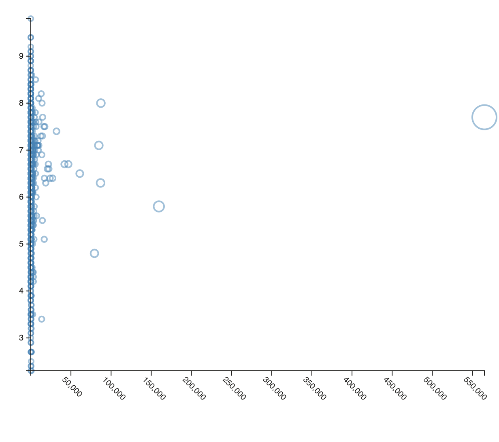
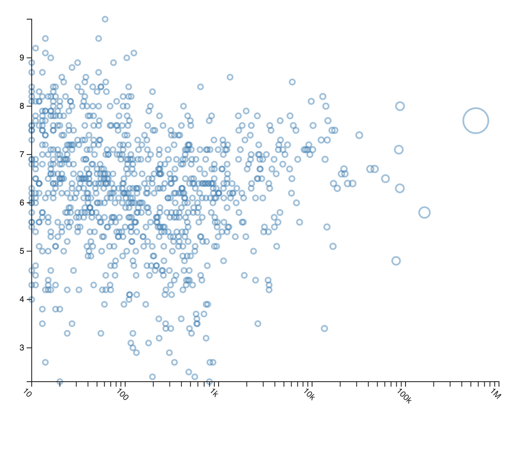
The log view shows a funnel, not a trend line. Titles with fewer than 100 votes (408 titles) cover almost the whole scale (2.3 to 9.8). Their mean is fairly high (6.54) because tiny audiences are often fans: 14% of them are rated 8 or higher. Titles with 100–999 votes have the lowest average (5.85), with 20% below 5. Above 1,000 votes (144 titles), ratings settle between about 5 and 8 (mean 6.53, SD 0.96 instead of 1.24). The most-voted titles average 6.7–6.8. Over all titles the rank correlation between votes and rating is only −0.13. Among titles with at least 1,000 votes it is +0.21.
Setup: X = year, Y = average_rating, Size = num_votes. I brushed the line chart to compare 1946–1970 with 2010–2024.
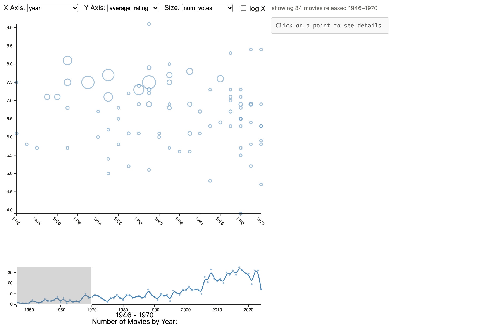
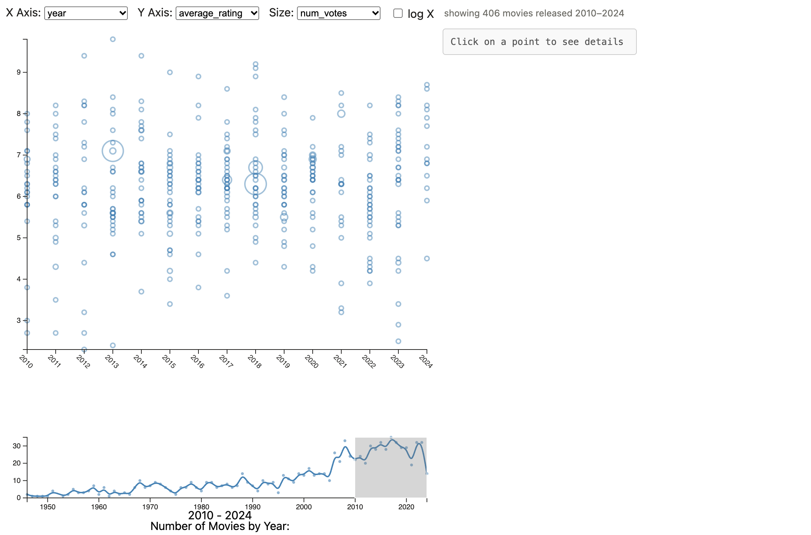
Brushing makes the comparison easy. The 84 movies from 1946–1970 have a mean rating of 6.62 (median 6.75), and only 4% are below 5. The 406 movies from 2010–2024 average 6.25 (median 6.3), with 12% below 5 and a wider spread (SD 1.25 vs 0.94). The top of the distribution is similar in both periods (7% and 9% rated 8+). The difference comes from the low tail that appears in recent decades. The line chart also shows how much output grew: from about 3 titles per year before 1971 to about 26 per year since 2005. Recent periods include many more low-budget titles; for example, horror is 6.7% of 2010–2024 titles but 1.2% before 1971. Older films that are still listed and rated today are likely a survivor-biased set of better-remembered films.
Summary of Part 3: genre clearly influences ratings; popularity mostly affects how stable a rating is; and era matters only slightly, through which films are made and remembered.
Question. Part 3 asked what makes a movie rated well. Here I ask what makes it watched: what determines how much audience attention (number of IMDb votes) a summer movie receives — its format (theatrical / TV / direct-to-video), its genre, or its release era? Votes are extremely skewed: the median title has 120 votes, while the top 10 titles hold 60% of all 2.07 million votes. A multi-view design fits this question because it has three candidate factors that interact. For example, “Romance is popular” might only be true for theatrical romances from the 2000s. Cross-filtering lets me hold one factor fixed while looking at the others.
| View | Encoding | Interaction |
|---|---|---|
| A. Votes by genre | Horizontal bar chart (genres with ≥10 titles); bar length = median or total votes; sorted; n shown on every bar | Click a bar to select a genre; this filters view C and highlights view B |
| B. Every title, split by format | Jittered strip plot on a log vote axis, one row per format, colored by format (validated colorblind-safe palette); black tick = median of the highlighted titles | Hover a dot for title, year, votes and rating. Titles outside the genre/decade selection fade to gray |
| C. Votes by decade | Vertical bar chart of median or total votes per decade, n under each bar | Click a bar to select a decade; this filters view A and highlights view B |
| Shared controls | Format legend chips, Median/Total toggle, summary numbers (titles, median votes, share of all votes, share held by the top 10), top-10 list | Toggling a format re-computes all views; Reset clears everything |
Compared with Part 1, this design uses different chart types (bar charts and a log-scale strip plot instead of a scatter and a line), a different measure (votes as the outcome), and different interactions: two-way click cross-filtering, legend toggles, a metric switch and hover tooltips, instead of a one-way brush.
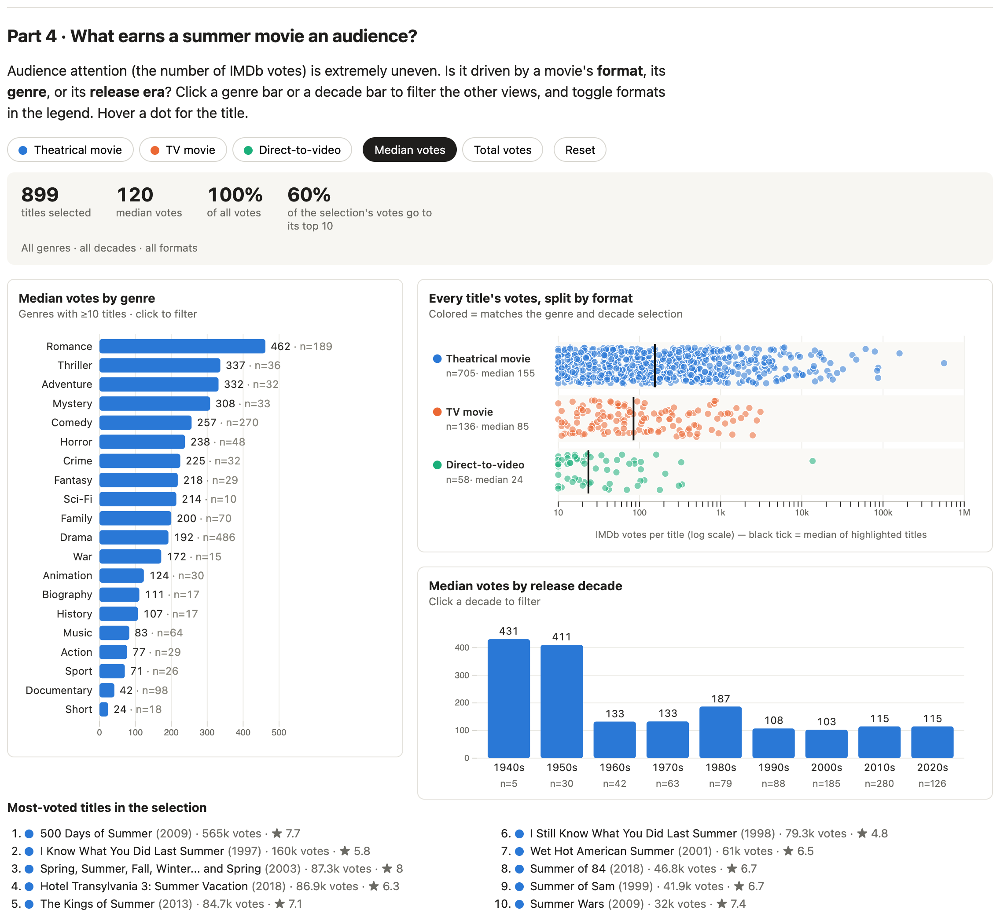
View B shows the format effect directly: the whole theatrical row sits to the right of the TV row, which sits to the right of the video row. Median votes are 155 (theatrical, 705 titles), 85 (TV movie, 136) and 24 (direct-to-video, 58). Theatrical titles account for 97% of all votes. After toggling “Theatrical movie” off (Figure 8), the remaining 194 TV and video titles hold only 3.0% of all votes, with a median of 58. Toggling formats one at a time shows that the effect also holds inside the large genres: theatrical vs. TV medians are 490 vs 349 for Romance, 217 vs 124 for Drama and 305 vs 181 for Comedy. A few small TV groups are exceptions, such as the 16 TV family movies.
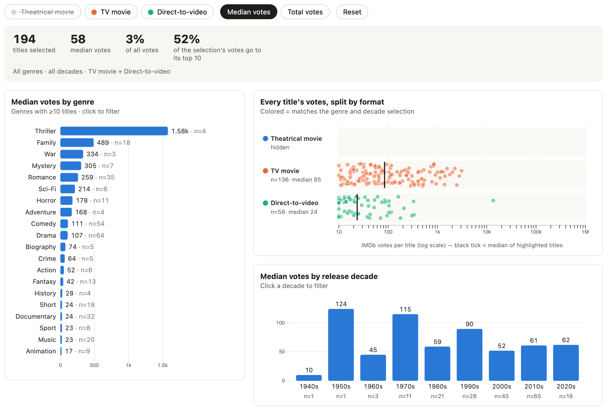
View A shows a roughly 20× range in typical attention: Romance has a median of 462 votes, Thriller 337, Adventure 332 and Mystery 308, while Documentary has 42 and Short 24. Selecting genres and comparing with Part 3 gives a clear contrast. Horror (Figure 9a) is the lowest-rated genre but gets a higher-than-typical median (238 votes) and 16% of all votes. However, 97% of horror votes go to its top 10 titles, led by the I Know What You Did Last Summer franchise (view B highlights them at the far right). Documentary (Figure 9b) is the best-rated genre but has a median of only 42 votes and 1.7% of all votes. Many documentaries are TV or video releases, but even theatrical documentaries have a median of only 50 votes, compared with 490 for theatrical romances.
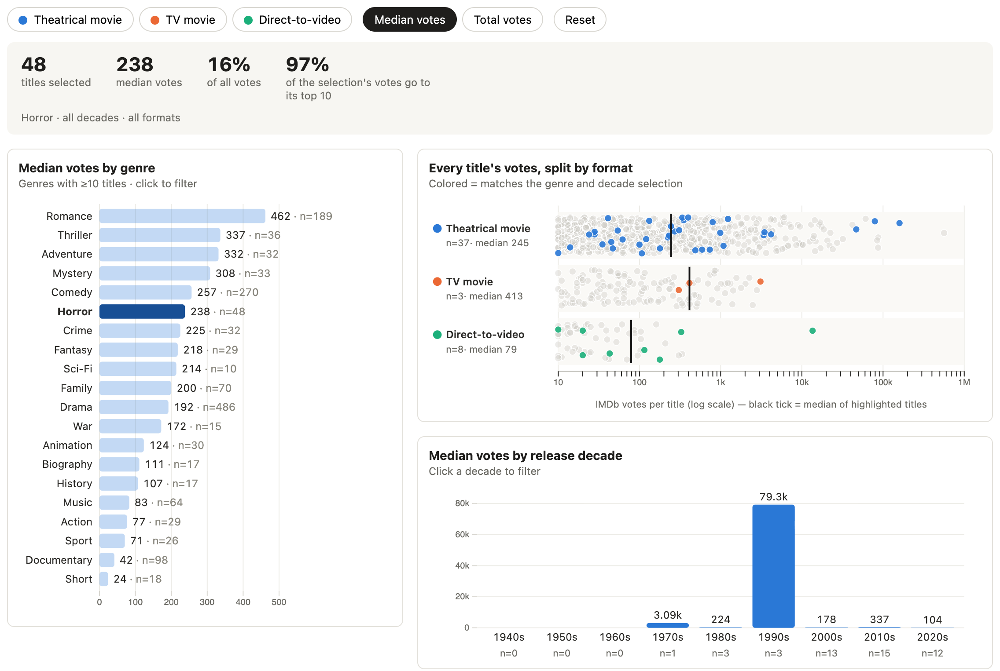
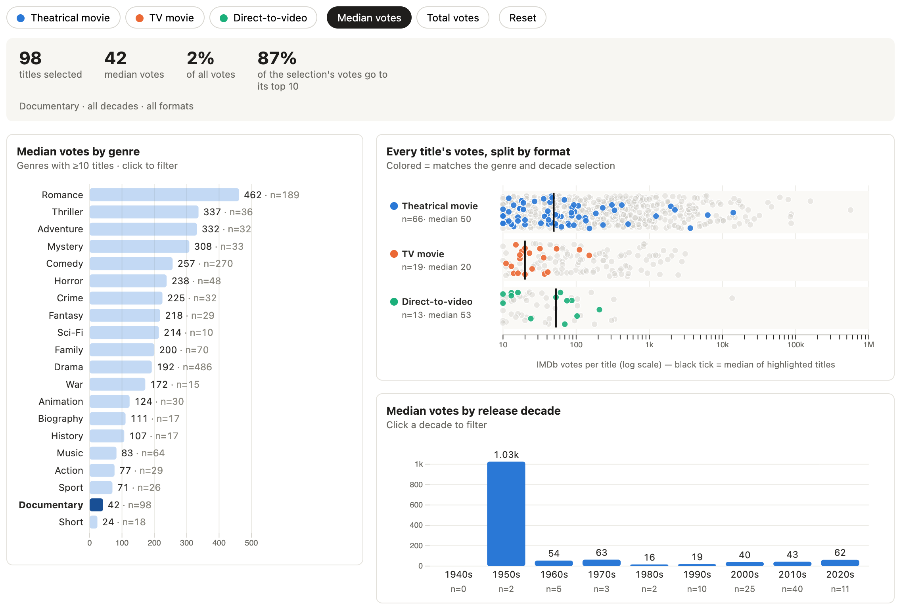
With the Total votes metric (Figure 10a), the 2000s look like the golden age, with 900k votes (43% of all). Switching to medians shows that a typical title from the 2000s gets only 103 votes, about the same as the 1990s (108), 2010s (115) and 2020s (115). The 2000s total is driven by a few hits: 500 Days of Summer alone accounts for 565k of the 900k votes. Only the 1940s and 1950s have higher medians (431 and 411). With so few titles (5 and 30), these are most likely the well-remembered classics that survived, as seen in Part 3. Combining filters shows the interaction: Romance × 2000s (Figure 10b) has 31 titles with a median of 809 votes and 38% of all votes in the dataset. 99% of those votes go to its top 10, and 29 of the 31 titles are theatrical releases.
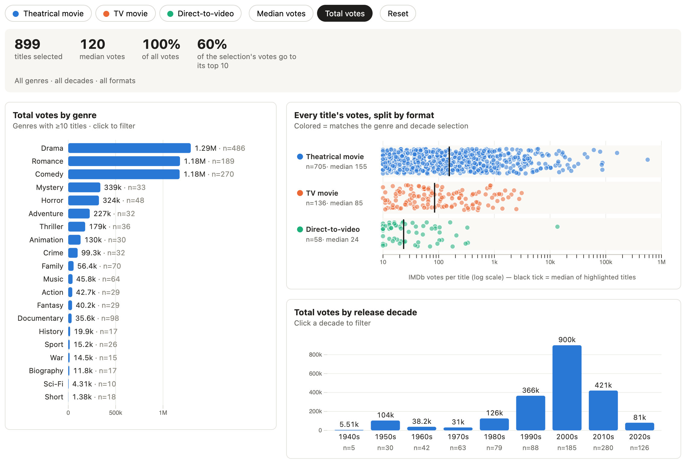
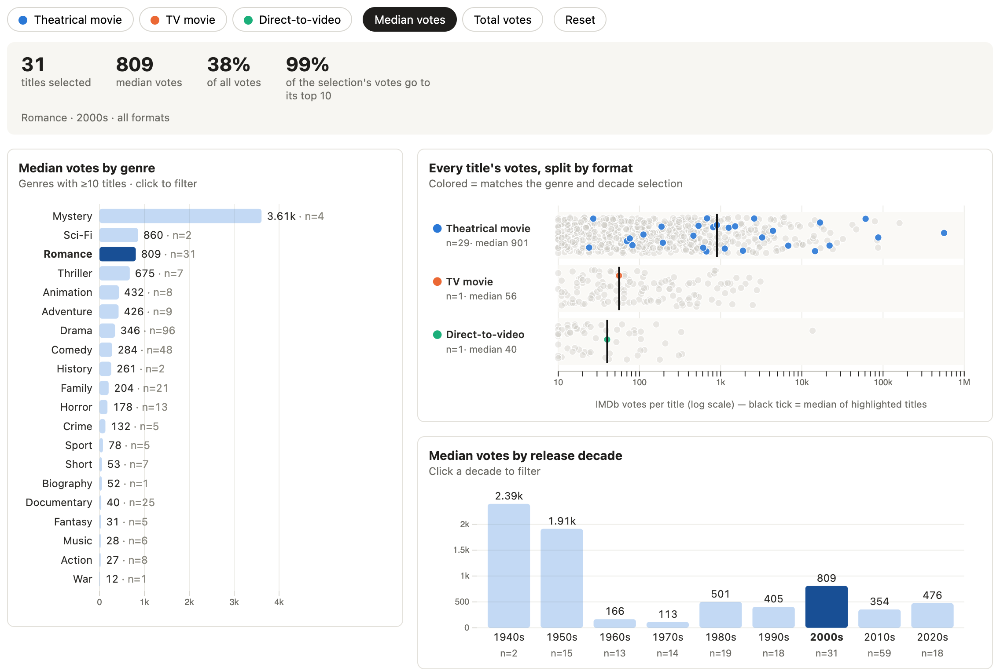